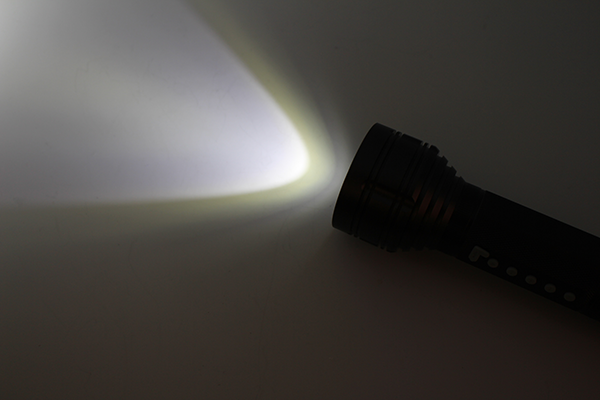
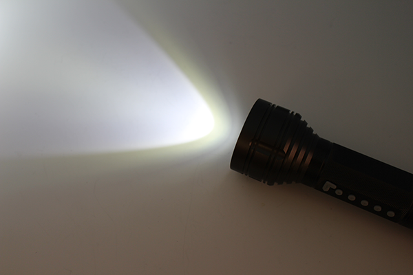
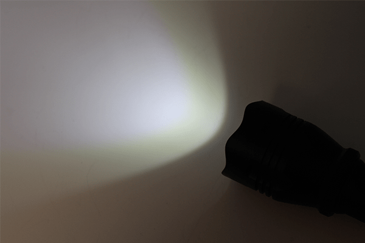
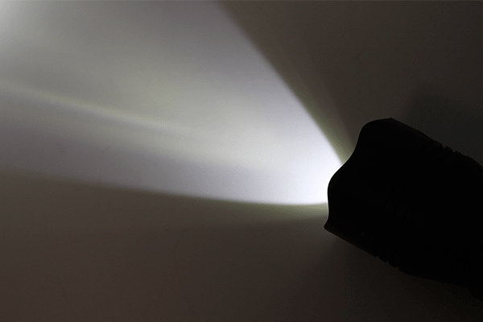
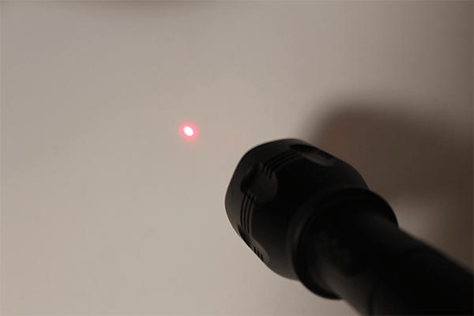
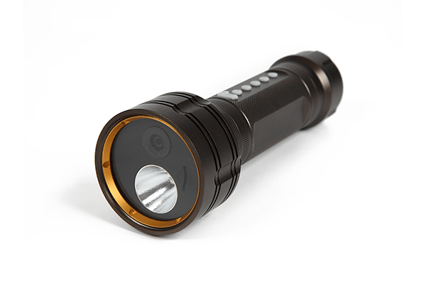
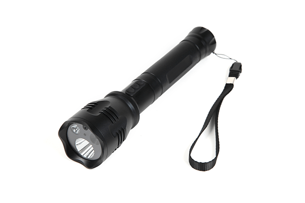

災害時等にも大活躍！懐中電灯型カメラのご紹介

最近は朝晩が涼しい日も多くなってきましたね
今年は台風が多く、低気圧にやられている方も多いのでは・・？？
当店は台風でも営業しておりますが、配送の際、悪天候だと
到着時間に遅れが生じる場合がございますのでその点はご了承くださいませ！
今回は、カメラ機能だけじゃない便利な機能を持ったカメラを2つご紹介いたします！
災害時は勿論、平常時でも何かと役に立つ便利な懐中電灯型カメラです！
明るい光で闇を照らしてくれる懐中電灯は一家に一台備えておきたい、防災グッズの定番ですよね！
当店では、そんな懐中電灯にビデオカメラを搭載してみました！
小型カメラ専門点だからこそ扱える、ちょっと特殊な製品なんです。
そんなものが有るんだ！と驚かれた方もいるかもしれませんが、隠れた人気商品なんですよ♪
早速製品の詳細をお伝えしていきます！
まずご紹介するのは「SPO-FLA」！
「LEDライト照射」「録画/静止画撮影」「ボイスレコーダー機能」「音楽再生機能」と、様々な場面で役立つ機能を搭載しています
懐中電灯型、と言うだけあってLEDライトは「ハイライト」「ローライト」「SOSライト（点滅）」の3パターンで照射が可能。
実際に点灯した状態の画像がこちらです！
 
画面左側が「ハイライトモード」画面右側が「ローライトモード」でライトを点灯したときの灯りです。
しっかりと周りを明るくしてくれていますね！
「ハイライトモード」だと遠くまで照射可能で、「ローライトモード」だと手元をしっかり照射します。
そして、画像ではなかなかお伝え出来ないのですが、チカチカと点滅する「SOSライトモード」も！
3種類もライトが有ると状況に合わせて使い分けることが出来るので汎用性が高い仕上がりです！
また、本体にお好きな音楽のデータを入れたmicroSD(HC)cardを入れますと、
本体持ち手下部にあるスピーカーから音楽を流せる・・なんてちょっと変わった機能も搭載しています。
思い出を記録するビデオ、音楽を流すスピーカー、そして懐中電灯と一台三役に使いまわせます！
キャンプ等のアウトドアの場面なんかに持ち込んでみても面白いかもしれませんね！
次にご紹介するのは「SPO-FLB」！
「LEDライト照射」「録画/静止画撮影」「ボイスレコーダー機能」「TV出力機能」が搭載されています。
そして、「充電中操作機能」と「上書き録画機能」も搭載！
搭載機能が豊富でとても使い勝手の良い製品となっています！
こちらのLEDライトは「通常ライト(3W)(1W)」と「レーザーライト」の3パターン照射可能です。
実際に点灯した状態の画像がこちらです！
 

画面上段左側から「通常ライト(1w)」「通常ライト(3w)」、
下段が「レーザーライト」でライトを点灯したときの灯りです。
通常のライトは強弱の2パターンを使い分けできます。
また、レーザーライトは会社のプレゼン等で使用したり、屋外での活動で使用したりなど用途は様々です。
また、カメラ機能についてもハイスペックです！
約5～6時間でフル充電となり、フル充電の状態で約8時間の連続稼働が可能！
当店で取り扱う製品の中でもなかなかこんなに長く録画できる製品は有りません！
また、「充電中操作機能」「上書き録画機能」を搭載する事で、コンセントにつないでいれば、
半永久的に録画する事だってできちゃいます・・！
何かの時の為の備えになるのは勿論、防犯・監視カメラとしてもしっかりお使い頂ける仕様です。
どちらも実際に懐中電灯としての機能がしっかりしていることと、ライトを使い分けることができるのがポイント！
災害時の貴重な撮影等にお役立て頂けることは間違いありません！ご家庭に備えて頂いても損の無い製品だと思います。
いかがでしたでしょうか・・？
今回は小型カメラ専門店だからこそ扱えるレアな商品をご紹介いたしましたが、
当店ではご紹介した商品以外にも、様々な種類の小型カメラを取り扱っています！
特に特殊な、大きくカテゴリー訳を出来ない製品については「その他」カテゴリーで一覧がご覧いただけます。
ご興味のある方は、そちらも併せてご覧下さいませ！
今回ご紹介した製品について、仕様や操作方法、実機で撮影したサンプル映像などは
以下の製品詳細ページよりご覧いただけます↓
【 SPO-FLA 】
【 SPO-FLB 】
当店ではHPからのご注文、お電話でのご注文を受け付けております。
また、お気づきの点や疑問点等のお問い合わせにも対応しております！
HPからは24時間、お電話の場合は10：00～12：00、13：00～17：00の時間帯で受付中！
365日休むこと無く営業中です！どうぞお気軽にご連絡下さい(^^♪
当店HPはコチラ↓↓からご覧いただけます！
【ＳＰＹ－ＯＮＬＩＮＥ－ＳＨＯＰ】

ご相談・ご質問はこちらから!!（店舗サイトのお問合せページへ飛びます）
mail：shop@spy-online.jp
tel：042-719-3319 (対応時間10：00～12：00、13：00～17：00)
それでは今日はこのへんで・・次回更新をお楽しみに！
また近々お会いしましょう(＾＾)